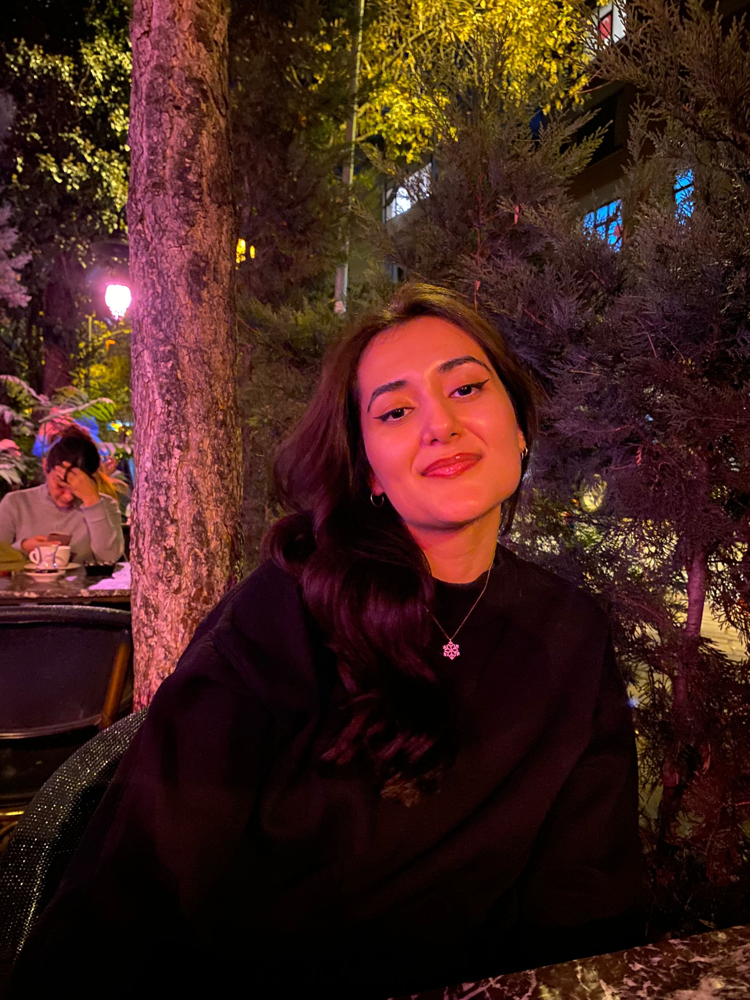

I am Beyza, a Geomatic Engineering student at Hacettepe University, where I have been studying since 2020 and will graduate in 2025. I have a strong passion for geomatics engineering, particularly in the areas of surveying, remote sensing, and geographic information systems (GIS). My goal is to specialize further in this field and contribute to the development of sustainable projects that leverage technology for environmental and societal benefits.